Configuring the board with avrdude allows us to configure properties such as the microcontroller's clock rate.
Since we have been issued the ATTiny85 instead of the ATTiny45, we can also use the shortcut T85.
Use the C make file program to generate the program that we want to upload to the board
For this part on Embedded Programming, we will need to install several software.
We first start by installing Git from https://git-scm.com/download/win .
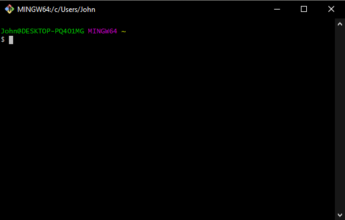We can download Zadig from https://zadig.akeo.ie/
After this, we will also need to download some files and install them in their appropriate directories.
We can download AVRDude from http://fab.cba.mit.edu/classes/863.16/doc/projects/ftsmin/windows_avr.html
Once downloaded, we'll extract it and copy it to our C://ProgramFiles Folder
We will also need to update our PATH once we are done installing our files in our directories. Simply type 'PATH' into the windows search box:
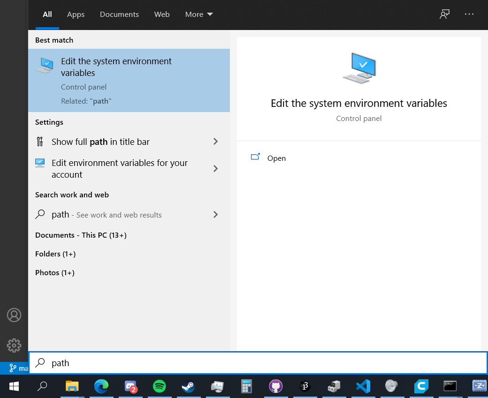We'll first start by openning Git Bash:
We can check that our ISP programmer is working by connecting it using the ISP cable and running the command "avrdude -p usbtiny -c t85"
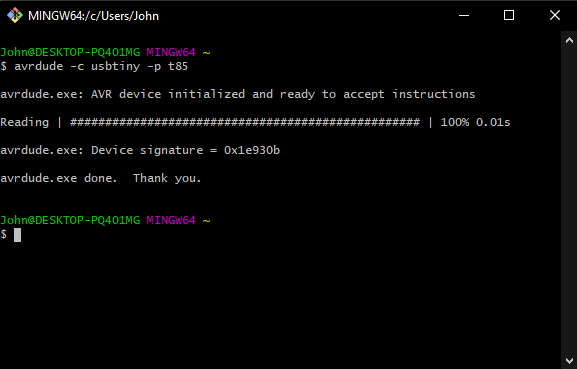As can be seen, the device has been successfully initialised. Now that we have checked that our Tiny85 is working, we can now program it.
We'll start by openning up command prompt and call directory into the directory that we have our firmware installed.
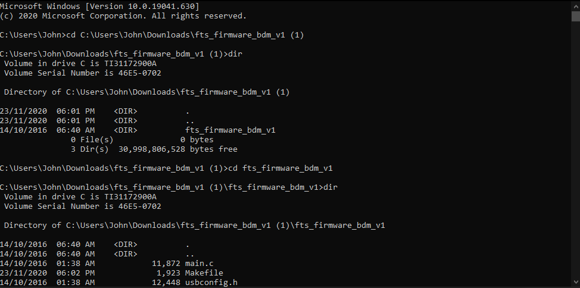]Due to the firmware being in a folder with the same name, we can check that we are in the right folder by using the dir command to list the files in the directory.
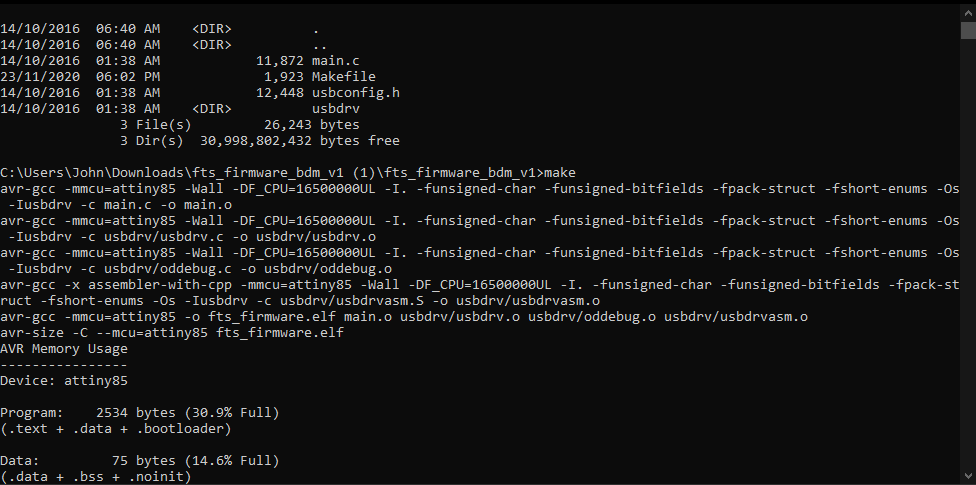We then run the 'make' command
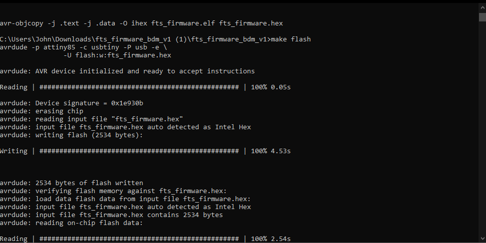Followed by the 'make flash' command
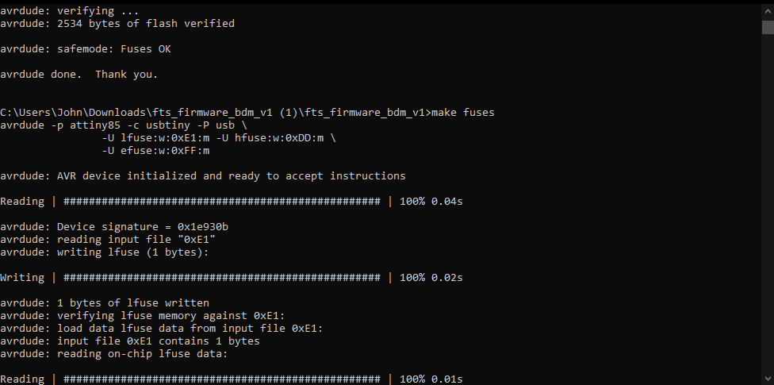We can then run the make fuses command
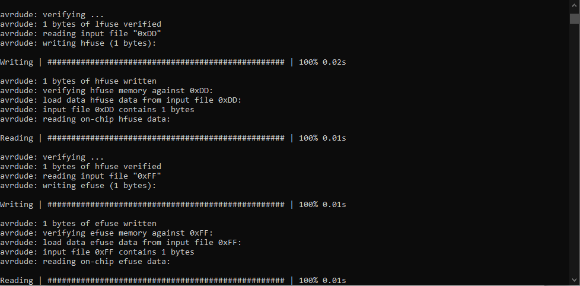 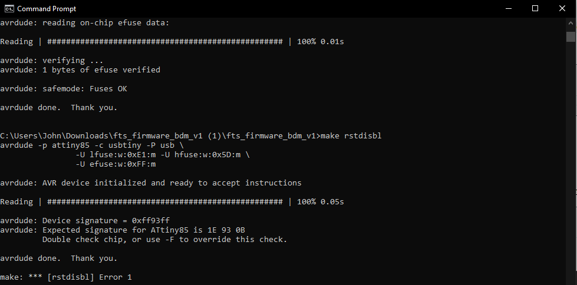 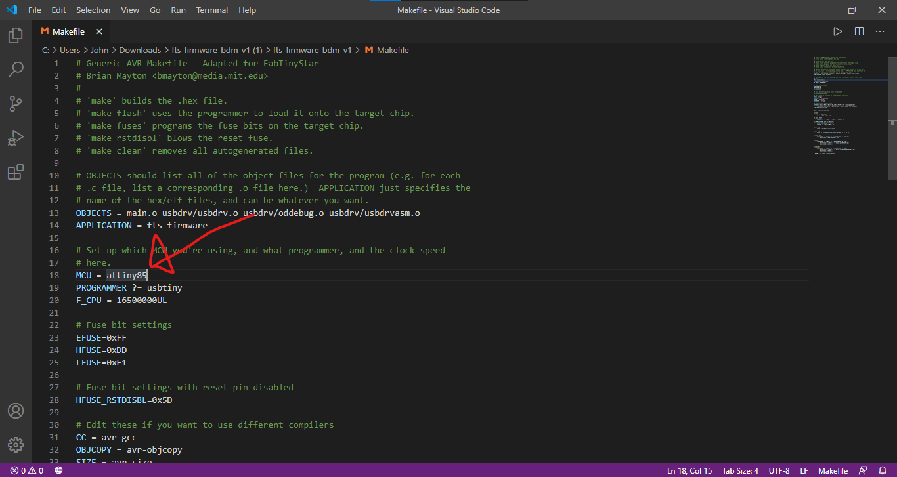I also changed the MCU to the attiny85 from the attiny45 since we have been given tiny85s instead of tiny45s.
We'll be using SpenceKonde's ATTinyCore library which is hosted on github at: https://github.com/SpenceKonde/ATTinyCore
There are 2 ways to setting up the Arduino IDE to act as an ISP programmer for our TINY85 target board.
Firstly, there is the manual installation method. Download a package and extract it and copy it to the Arduino Library folder
Secondly, there is the board manager url method, copy the URL to the Arduino library manager and it will automatically install the library. Since method is simpler due to only requiring a copy and paste of a link and a restart of the Arduino IDE and clicking of buttons, I will be using this method. The first method's documentation can be found in the installation tab on SpenceKonde's repository.
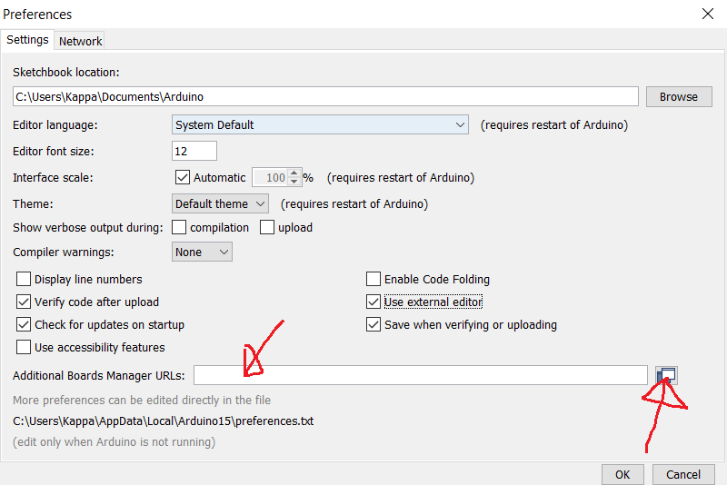Simply copy "http://drazzy.com/package_drazzy.com_index.json" and paste it in the "Additional Boards Managers URLs" field.
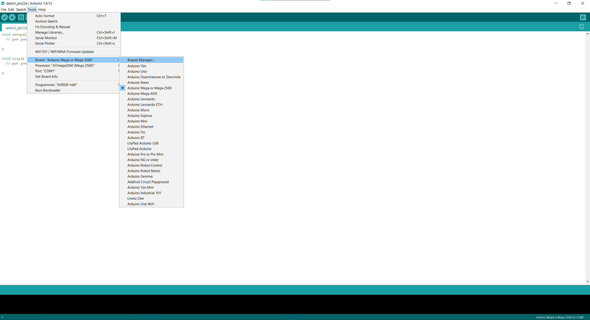After restarting Arduino, we can now configure the settings for our Tiny85 board, such as the clock at which the Tiny85 is operating at, which Tiny chip we are using, etc
After restarting Arduino, we'll head to our library manager where we'll finish off the installation by searching for 'Tiny' which will cause SpenceKonde's library to pop up. Click on 'Install'
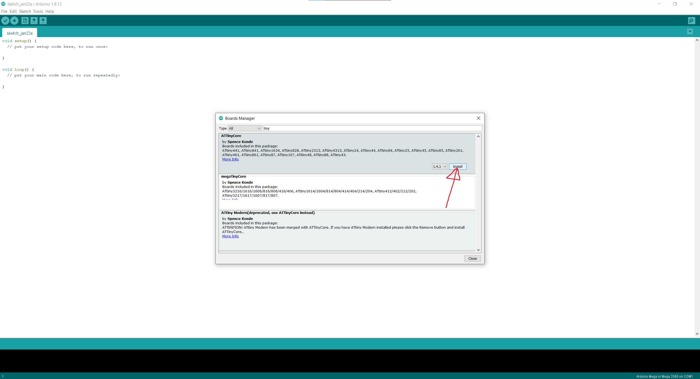We can now select the Tiny25/45/85 as our board:
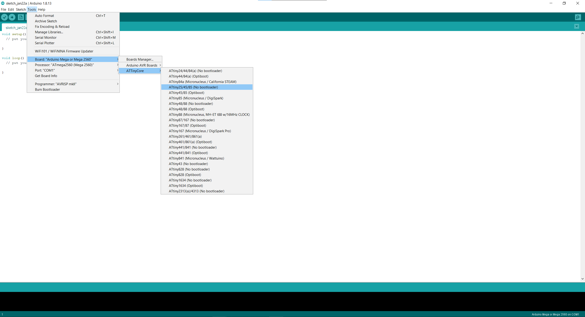One important thing to note is not to select an external clock in the Arduino IDE unless you have an external clock connected to the microcontroller. This will cause the board to stop working as it will keep waiting for an external clock at its clock pin.
If we change the internal clock frequency that the board is operating at, we will have to go into Arduino and 'burn bootloader'. This will change the fuses to the appropriate setting.
Since we are using an ISP programmer and a target board, uploading to the target board will be slightly different from a traditional Arduino Uno.
Instead of clicking the upload to board button at the top left of the IDE, we will have to go through "Tools" and "Upload using programmer", as compared to a traditional Arduino Uno or Mega.
For our assignment, we have been tasked with reading a datasheet and programming our target board to do stuff.
Programming the board to do stuff, send a button press through serial monitor or something
Since I have already built a Tiny85 board, I will use its datasheet here.
We first start by searching for 'Tiny85 datasheet' in our search engine of choice.
The first search result here is from microchip showing the tiny25,45 and 85 datasheets.
After clicking it, we get this:
insert image here of cover page of the datasheet
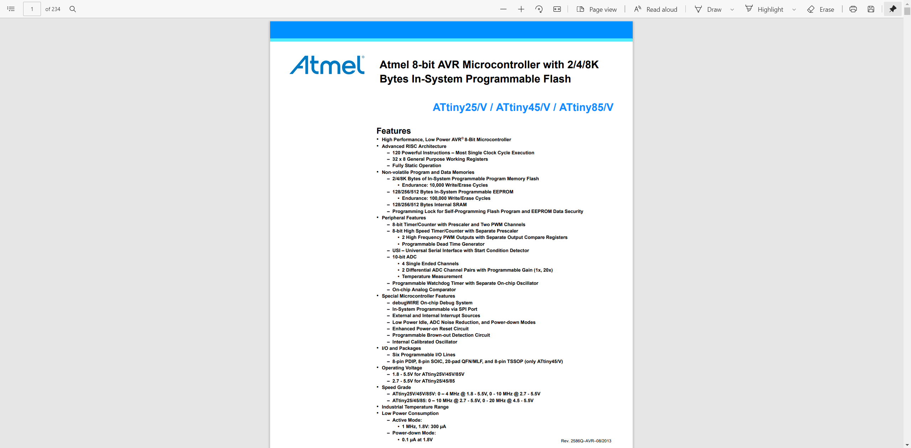Here we can see a brief summary of the features of the Tiny25/45/85 family.
Moving on, in this section of the datasheet, we can see that the Tiny25/45/85 microcontrollers are available in both PDIP/SOIC/TSSOP and QFN/MLF packages. In Section 1.1 we can also see a brief description of the various pins, for instance the self explantory VCC, ground as well as the features of the IO pins on Port B. For instance, the Port B IO pins also have internal pull up resistors.
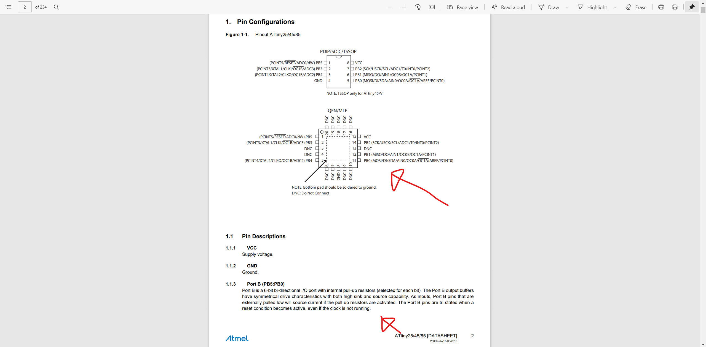Programming our target board with the Arduino as an ISP is almost the same as a regular Arduino Uno or Mega.
Before programming our target board, we will first have to refer to the datasheet to understand the Pinout of the Tiny85.
We will need to know the pinout to properly set-up our board.
From my schematic, I know that I have my switch connected to PB3 and LED connected to PB4.
I wrote a simple blink program for my board:
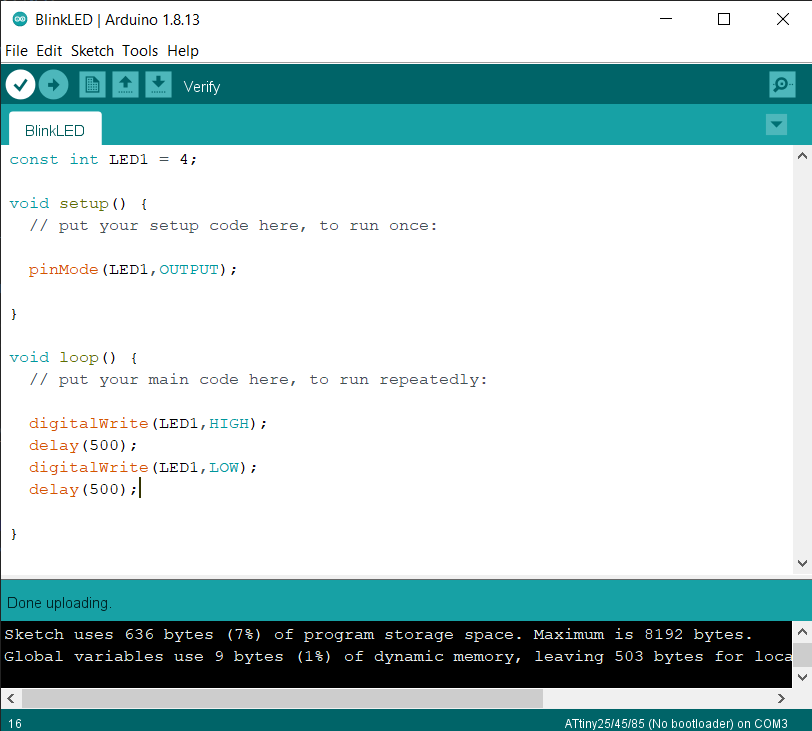As seen from the code, the LED lights up for half a second where it is the pin it is connected to is set to HIGH, followed by another half a second where it is LOW, hence it blinking.
Here is the code for a simple program where a button press switches on the LED:
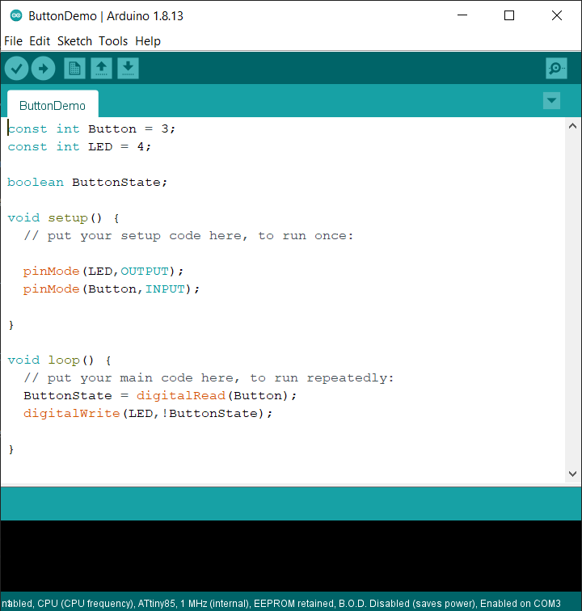Since there is already a pullup resistor across my push button, by default the digitalRead will be HIGH since the push button has been 'pulled up' to 5V. Hence, it producing a 5V reading when the button is inactive and a 0V reading when pressed. Hence being active low
By reading in the voltage as boolean, it will either be high when the button isn't pressed, and low when the button is pressed.
I am thus able to invert the state of the button using the !state, using digitalRead to cause the LED to turn on when the button is pressed.
Here is a video showing the LED turning on when the button is pressed:
To finish off this embedded programming segment, I'll print the status of the LED on the serial monitor. For instance, a push button press toggles the LED status and it'll print on the serial monitor whether the LED has turned on or off.
Insert imageS here
Here is how the process goes:
I first start by connecting my ISP programmer to a USB port on my laptop and connect the target board to my ISP programmer through the ISP header, ensuring that the header is connected appropriately with respect to 5V and GND.
I then upload my .ino file, using "Upload through programmer" instead of upload.
Now that the target board has been programmed, I remove my ISP programmer from the USB port and remove the ISP cable, connecting the target board to the FTDI board, ensuring that the cables are connected appropriately, for instance whether the TX and RX pins have been swapped in software.
I then connect the FTDI board into the USB port. I then check which COM port the FTDI board is connected to and use the Arduino IDE to select the appropriate COM port.
Lastly, I open the serial monitor to view any serial data that has been printed due to say, a button press on the board.
Insert code here
Insert video here